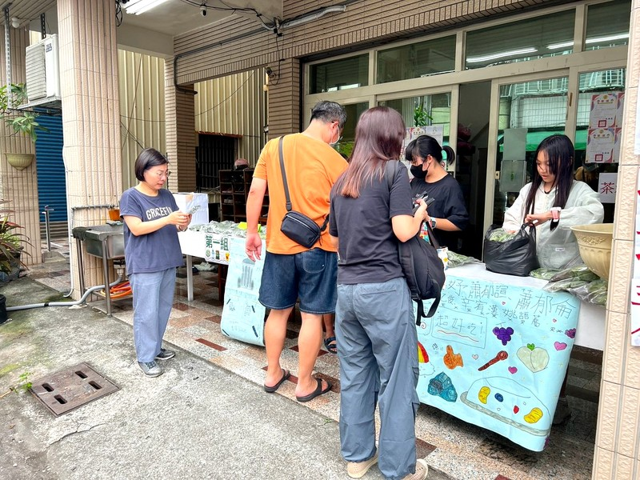

支柱一｜教育哲學
為什麼我們堅持「專注常規勝過考卷刷題」？
很多家長問：「別的安親班每天寫三四本評量，為什麼尚學強調先搞懂概念、先坐正握好筆？」因為我們看過太多靠刷題硬背換取短暫高分的孩子，升上國中遇到長篇素養與跨單元題型時，思維全面崩潰。在尚學，我們融入日常探究思考（PBL），引導孩子大方發問、推導因果，建立帶得走的自學能力。
- ✓ 雙向商量與批判思考：打破單向說教，遇到困惑引導學員拆解問題核心，養成思考主見。
- ✓ 逐字逐行批閱訂正：不只對答案打勾，更耐心梳理思考盲點，確實當日搞懂。
- ✓ 坐姿握筆與書寫常規：糾正低頭駝背與握筆錯誤，讓寫字不再是痛苦差事。

探究引導・培養知其所以然的底氣